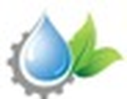

Mr. Anil S. Pund
Proprietor, Agrotech Engineers & Consultants
Technical design, execution & industrial supply
- Experience
- Since 1990
- Firm established
- Aug 1996
- Qualification
- B.Tech, Agri. Engg.
- Reach
- Gujarat · Maharashtra · Karnataka
The journey
Raised in an agricultural family in Ahilyanagar district, Western Maharashtra, Mr. Pund completed his B.Tech in Agricultural Engineering at Mahatma Phule Krishi Vidyapeeth (MPKV), Rahuri, between 1986 and 1990.
He joined Jain Irrigation Systems Ltd. as a Design Engineer directly after graduating. The role took him across Maharashtra and gave him a site-hardened command of installation, execution and commissioning under real field conditions.
The firm
Founded in 1996, Agrotech marks its 30th anniversary in 2026. Co-managed with Mrs. Anjali Pund, it runs a retail outlet in Shukrawar Peth, the heart of Pune’s irrigation and agriculture market, and a 2,500 sq. ft. warehouse on the city’s outskirts.
Agrotech is an authorised distributor for Rain Bird International. Its sister company, Yash Enterprises, is a channel partner for Jain Irrigation Systems, AMIAD Filtration (Israel), Finolex Plasson, Rivulis, Hunter Industries (USA) and WILO Pumps.
Contribution to Blue & GreenAgrotech’s central warehousing hub and distribution network, supported by thirty years of design and execution for corporate, industrial, defence and institutional clients.
View Agrotech’s project track record